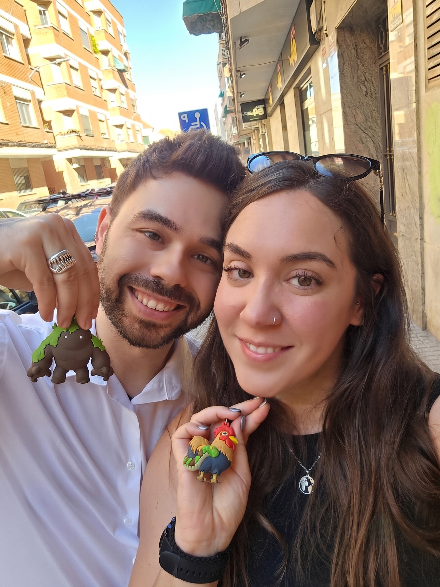
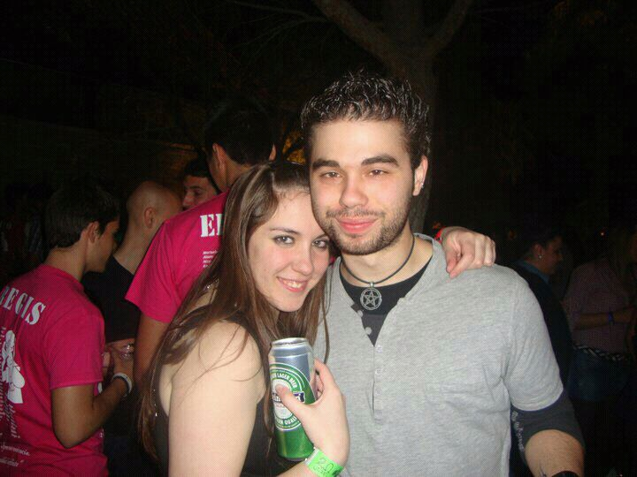

¡Holi pequeña!
Bueno, ahora sí que es tu cumpleaños en España, y como sé que prefieres que no publique esto públicamente, te lo voy a mandar por aquí.
Han pasado unos 5649 días desde aquel momento en el que te vi por primera vez sin saber lo importante que ibas a ser para mí. 5254 días desde que entendí que eras mi todo, que quería compartir mi vida contigo y que jamás te dejaría escapar. 1502 días desde que el miedo pudo conmigo y sentí que dejarte ser libre para que fueras la persona que debías ser y quitarte una carga como yo, era la decisión más lógica. Spoiler: no.
Hemos vivido media vida de momentos, tanto increíbles como aterradores, pero aun así aquí seguimos, intentándolo. Quizás hemos necesitado unos años para madurar, para recomponernos y poder ser mejores juntos (o quizás solo fuimos tontos, pero estábamos demasiado rotos para tomar buenas decisiones), pero aun con todo lo malo y lo mucho bueno, me alegro infinitamente de que sigamos juntos, que pueda seguir en tu vida y por fin poder compartirla y no desde la distancia.
Otro año más, y otros cumpleaños juntos. Sé que quizás este pueda ser un poco solitario (o quizás no, no sé qué planes tienes mañana), pero lo que sí sé es que será el último que pase lejos de ti. Te quiero muchísimo, May. Quiero pasar cada día del resto de mi vida contigo. Quiero que hagamos mil planes, quiero que sanemos juntos y sigamos creciendo juntos.
Bueno amor, espero de corazón que mañana sea un gran día. Te quiero muchísimo. Gracias por todo.
